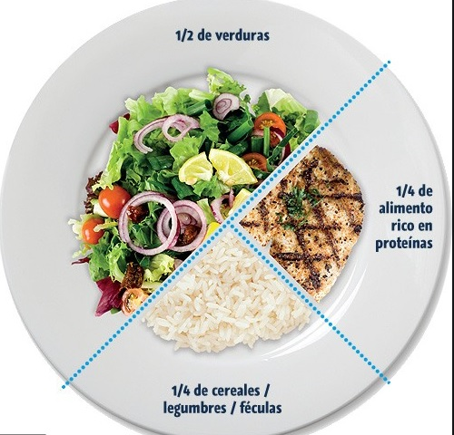
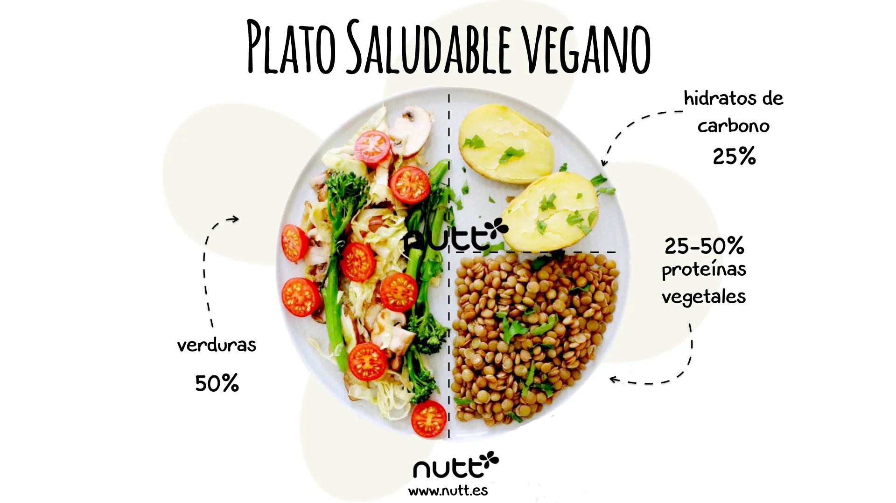

Recetas saludables para armar tu plato ideal
Tarta integral de acelga y pollo
Ingredientes
- 1 cebolla grande
- 1/2 morron rojo, 1/2 morron verde
- 1 mazo de acelga
- 1 pechuga deshuesada
- 3 huevos
- 1 cucharada de queso crema
- sal a gusto
- 200g de harina integral
- Agua (cantidad necesaria)
- 80cc de aceite
Procedimiento
- La masa es tan sencilla como mezclar todos los ingredientes y formar un bollo. No suele pegarse ni en las manos ni en la mesada. Reservar tapada con un paño durante 15 minutos
- Para el relleno, hervir la acelga y cortarla groseramente picada. Cortar el morrón,la cebolla chiquitita y el pollo en cubitos o tiras. Rehogar en aceite de oliva.
- Mezclar la cebolla, el pollo, el morrón, la acelga, los huevos, el queso crema, condimentar muy bien. Reservar
- Estirar la masa con un palote (rinde 2 tapas) y forrar un molde, pinchar con un tenedor la masa y cocinar a 190° para dar una pre-cocción.
- Luego colocar el relleno dentro y hornear hasta dorar
Revuelto de vegetales
Ingredientes
- 1 cebolla grande
- 1 morron (medio rojo y medio verde)
- Dos zapallitos de tronco rallados
- Medio zapallo cortado en cubitos (opcional previamente hervido)
- Medio repollo colorado rallado finito
- Dos zanahorias ralladas
- 2 papas grandes ralladas
- 1 lata de atún
- Agua (cantidad necesaria)
Procedimiento
- Colocar en una sarten con aceite de oliva la cebolla y morrones.
- Una vez que se doro la cebolla, colocar el resto de los ingredientes, excepto el atún.
- Ir agregando agua hasta notar que la papa y el zapallo esten cocidos
- Una vez cocido, apagar y colocar el atun para que se caliente con el calor de los demas ingredientes

Recetas saludables vegetarianas
Tortilla de zapallito de tronco
Ingredientes
- 2 zapallitos de tronco
- 4 champiñones
- 1/2 morron rojo y 1/2 morron verde
- 4 huevos
- 6 tomates cherry
- Condimentos a gusto
Procedimiento
- Corta el zapallito en rodajas finas y cocina en una sartén con un chorrito de aceite de oliva hasta que el zapallito esté levemente dorado. Condimenta con sal y pimienta, reserva
- Cocina los champiñones con aceite de oliva sin mover hasta lograr eliminar su líquido y dejarlos bien dorados.
- En un bowl pon los zapallitos junto con los champiñones y el pimentón picado.
- En otro bowl pequeño pon los huevos y agrega sal, orégano y pimienta limón. Mezcla muy bien con un batidor hasta homogeneizar.
- Vierte el batido de huevos sobre las verduras.
- Cocina a fuego medio-bajo la preparación en una sartén caliente con una película de aceite.
- Una vez la capa del fondo esté dorada, da vuelta con ayuda de un plato plano y cocina por unos minutos más o hasta que la tortilla esté lista
- Sive con una ensalada de tomates cherry y oregano
Tofu y lentejas al curry
Ingredientes
- 1 taza de lentejas
- 1 bloque de tofu firme,cortado en cubos
- 2 cucharadas de aceite de oliva
- 1 cebolla picada
- 2 dientes de ajo
- 1 cucharadita de comino molido
- 1/2 cucharadita de curcuma
- Sal y pimienta a gusto
- 2 tazas de caldo de verduras (usar agua de verduras hervidas previamente)
Procedimiento
- Lavar las lentejas y cocinar segun intrucciones del paquete
- En un sartén grande, calienta el aceite de oliva a fuego medio.Agrega la cebolla, el ajo y cocina hasta que esten dorados
- Agrega el tofu y cocina hasta que esté dorado, retira y reserva
- En el mismo sartén,agrega el curry en polvo,comino molido y cúrcuma.Cocina durante 1 minuto revolviendo constantemente
- Agrega las lentejas cocidas, el caldo y el tofu reservado. Cocina durante 5-7 minutos.
- Sirve caliente y decorado con queso